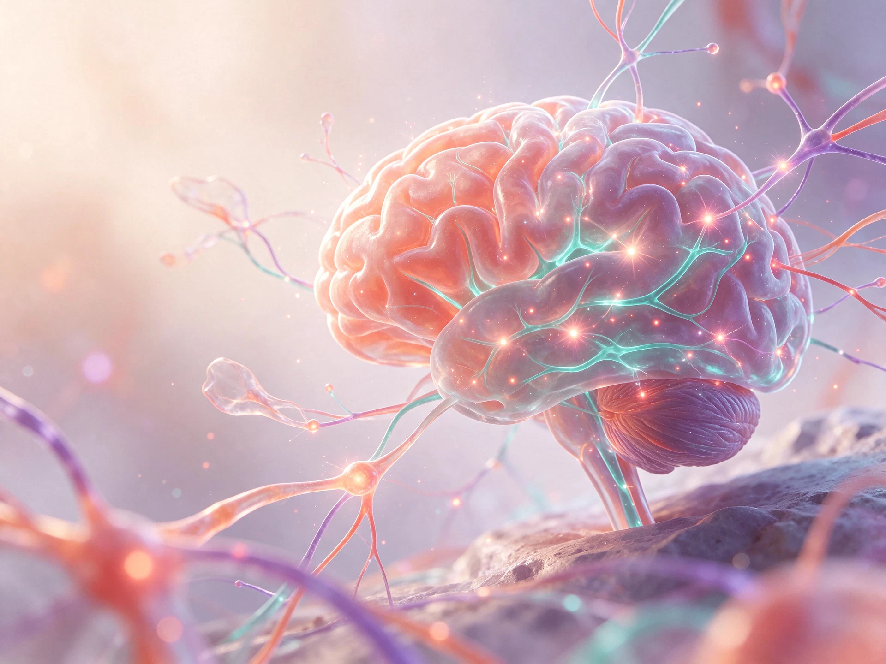

چطور یاد میگیریم؟
دنیای مغز و یادگیری
با نگاهی علمی و ساده به مغز، حافظه و توجه، راههایی پیدا کن تا یادگیری را آگاهانهتر و مؤثرتر پیش ببری.
کاوش موضوعها
موضوعهای این دنیا
با نگاهی علمی و ساده به مغز، حافظه و توجه، راههایی پیدا کن تا یادگیری را آگاهانهتر و مؤثرتر پیش ببری.
کاوش موضوعها